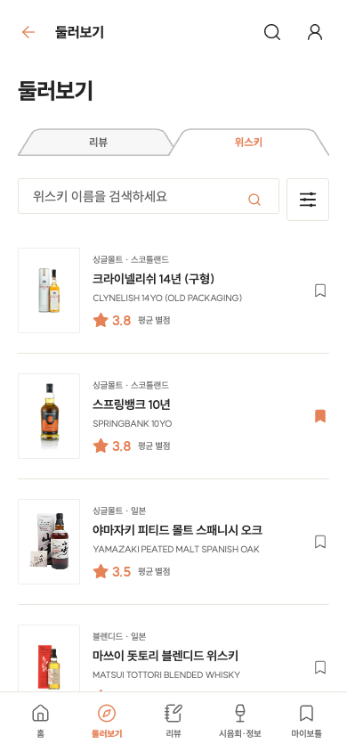
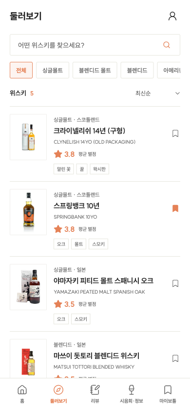
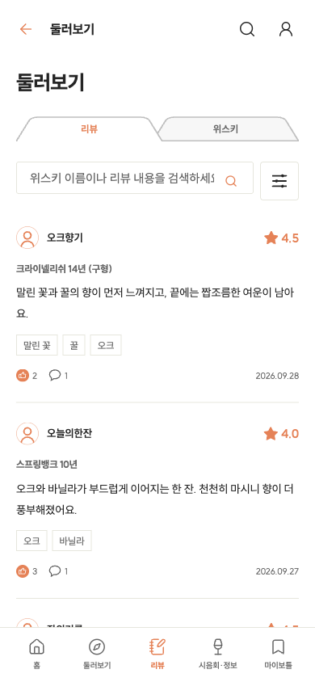
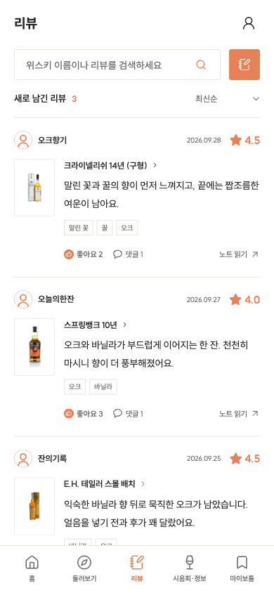
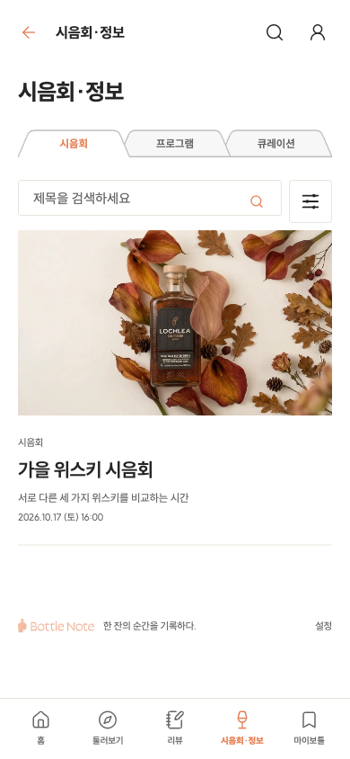
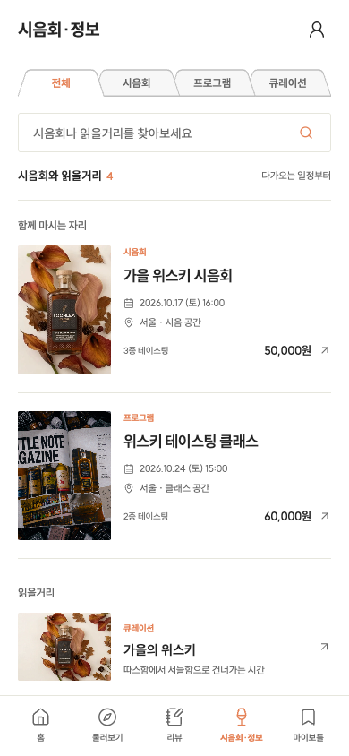
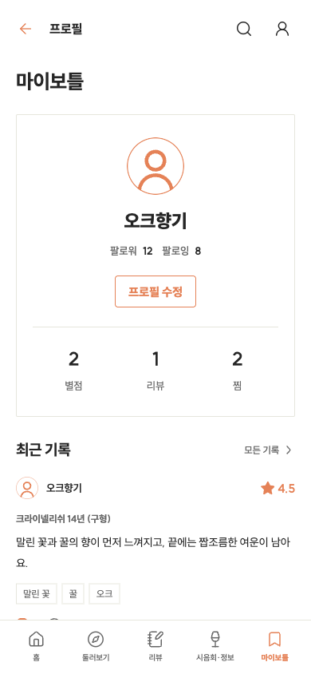

<!doctype html><html lang="ko"><meta charset="utf-8"><title>목록 화면 개선 비교</title><style>body{margin:0;background:#ebe9e4;font:14px sans-serif;width:808px}section{padding:12px 8px 16px}h2{margin:0 0 12px;font-size:18px}.pair{display:flex;gap:12px}.pair>div{width:390px}.pair p{margin:0 0 8px;color:#555}img{display:block;width:390px;height:844px}</style>
<section id="explore"><h2>둘러보기 — 검색과 분류 아래로 목록을 당김</h2><div class="pair"><div><p>이전</p></div><div><p>수정</p></div></div></section>
<section id="reviews"><h2>리뷰 — 병과 리뷰를 묶고 글쓰기 버튼 노출</h2><div class="pair"><div><p>이전</p></div><div><p>수정</p></div></div></section>
<section id="curation"><h2>시음회 — 일정, 장소, 가격을 목록에서 확인</h2><div class="pair"><div><p>이전</p></div><div><p>수정</p></div></div></section>
<section id="mybottle"><h2>마이보틀 — 프로필보다 나의 노트 중심</h2><div class="pair"><div><p>이전</p></div><div><p>수정</p></div></div></section></html>
